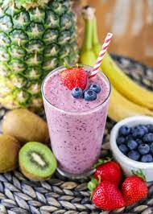

Bedtime Protein Smoothie

Description
This High-Protein smoothie will help keep you full and give you a nice boost
of micro-nutrients right before bed!
This page will show you all the ingredients you need and how to make this delicious meal.
Ingredients
- 40g casein protein powder
- 15g peanut butter
- 1 large banana
- 200ml almond milk
- 160g frozen mixed berries
Steps
- Add almond milk, casein protein powder, peanut butter, and banana to blender
- Blend until smooth
- Add frozen mixed berries to blender along with 100ml of water
- Blend until smooth once more
- Enjoy!